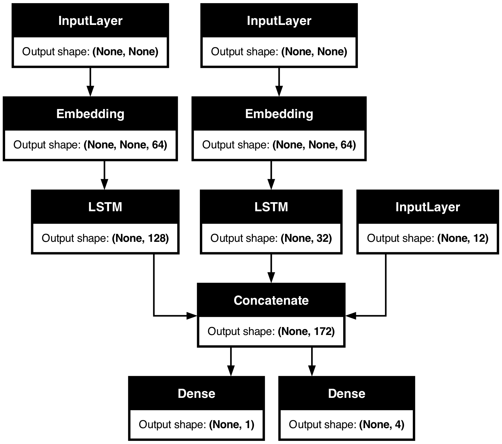

Keras debugging tips
Author: fchollet
Date created: 2020/05/16
Last modified: 2023/11/16
Description: Four simple tips to help you debug your Keras code.

Introduction
It's generally possible to do almost anything in Keras without writing code per se: whether you're implementing a new type of GAN or the latest convnet architecture for image segmentation, you can usually stick to calling built-in methods. Because all built-in methods do extensive input validation checks, you will have little to no debugging to do. A Functional API model made entirely of built-in layers will work on first try – if you can compile it, it will run.
However, sometimes, you will need to dive deeper and write your own code. Here are some common examples:
- Creating a new
Layersubclass. - Creating a custom
Metricsubclass. - Implementing a custom
train_stepon aModel.
This document provides a few simple tips to help you navigate debugging in these situations.
Tip 1: test each part before you test the whole
If you've created any object that has a chance of not working as expected, don't just drop it in your end-to-end process and watch sparks fly. Rather, test your custom object in isolation first. This may seem obvious – but you'd be surprised how often people don't start with this.
- If you write a custom layer, don't call
fit()on your entire model just yet. Call your layer on some test data first. - If you write a custom metric, start by printing its output for some reference inputs.
Here's a simple example. Let's write a custom layer a bug in it:
import os
# The last example uses tf.GradientTape and thus requires TensorFlow.
# However, all tips here are applicable with all backends.
os.environ["KERAS_BACKEND"] = "tensorflow"
import keras
from keras import layers
from keras import ops
import numpy as np
import tensorflow as tf
class MyAntirectifier(layers.Layer):
def build(self, input_shape):
output_dim = input_shape[-1]
self.kernel = self.add_weight(
shape=(output_dim * 2, output_dim),
initializer="he_normal",
name="kernel",
trainable=True,
)
def call(self, inputs):
# Take the positive part of the input
pos = ops.relu(inputs)
# Take the negative part of the input
neg = ops.relu(-inputs)
# Concatenate the positive and negative parts
concatenated = ops.concatenate([pos, neg], axis=0)
# Project the concatenation down to the same dimensionality as the input
return ops.matmul(concatenated, self.kernel)
Now, rather than using it in a end-to-end model directly, let's try to call the layer on some test data:
x = tf.random.normal(shape=(2, 5))
y = MyAntirectifier()(x)
We get the following error:
...
1 x = tf.random.normal(shape=(2, 5))
----> 2 y = MyAntirectifier()(x)
...
17 neg = tf.nn.relu(-inputs)
18 concatenated = tf.concat([pos, neg], axis=0)
---> 19 return tf.matmul(concatenated, self.kernel)
...
InvalidArgumentError: Matrix size-incompatible: In[0]: [4,5], In[1]: [10,5] [Op:MatMul]
Looks like our input tensor in the matmul op may have an incorrect shape.
Let's add a print statement to check the actual shapes:
class MyAntirectifier(layers.Layer):
def build(self, input_shape):
output_dim = input_shape[-1]
self.kernel = self.add_weight(
shape=(output_dim * 2, output_dim),
initializer="he_normal",
name="kernel",
trainable=True,
)
def call(self, inputs):
pos = ops.relu(inputs)
neg = ops.relu(-inputs)
print("pos.shape:", pos.shape)
print("neg.shape:", neg.shape)
concatenated = ops.concatenate([pos, neg], axis=0)
print("concatenated.shape:", concatenated.shape)
print("kernel.shape:", self.kernel.shape)
return ops.matmul(concatenated, self.kernel)
We get the following:
pos.shape: (2, 5)
neg.shape: (2, 5)
concatenated.shape: (4, 5)
kernel.shape: (10, 5)
Turns out we had the wrong axis for the concat op! We should be concatenating neg and
pos alongside the feature axis 1, not the batch axis 0. Here's the correct version:
class MyAntirectifier(layers.Layer):
def build(self, input_shape):
output_dim = input_shape[-1]
self.kernel = self.add_weight(
shape=(output_dim * 2, output_dim),
initializer="he_normal",
name="kernel",
trainable=True,
)
def call(self, inputs):
pos = ops.relu(inputs)
neg = ops.relu(-inputs)
print("pos.shape:", pos.shape)
print("neg.shape:", neg.shape)
concatenated = ops.concatenate([pos, neg], axis=1)
print("concatenated.shape:", concatenated.shape)
print("kernel.shape:", self.kernel.shape)
return ops.matmul(concatenated, self.kernel)
Now our code works fine:
x = keras.random.normal(shape=(2, 5))
y = MyAntirectifier()(x)
pos.shape: (2, 5)
neg.shape: (2, 5)
concatenated.shape: (2, 10)
kernel.shape: (10, 5)
Tip 2: use model.summary() and plot_model() to check layer output shapes
If you're working with complex network topologies, you're going to need a way to visualize how your layers are connected and how they transform the data that passes through them.
Here's an example. Consider this model with three inputs and two outputs (lifted from the Functional API guide):
num_tags = 12 # Number of unique issue tags
num_words = 10000 # Size of vocabulary obtained when preprocessing text data
num_departments = 4 # Number of departments for predictions
title_input = keras.Input(
shape=(None,), name="title"
) # Variable-length sequence of ints
body_input = keras.Input(shape=(None,), name="body") # Variable-length sequence of ints
tags_input = keras.Input(
shape=(num_tags,), name="tags"
) # Binary vectors of size `num_tags`
# Embed each word in the title into a 64-dimensional vector
title_features = layers.Embedding(num_words, 64)(title_input)
# Embed each word in the text into a 64-dimensional vector
body_features = layers.Embedding(num_words, 64)(body_input)
# Reduce sequence of embedded words in the title into a single 128-dimensional vector
title_features = layers.LSTM(128)(title_features)
# Reduce sequence of embedded words in the body into a single 32-dimensional vector
body_features = layers.LSTM(32)(body_features)
# Merge all available features into a single large vector via concatenation
x = layers.concatenate([title_features, body_features, tags_input])
# Stick a logistic regression for priority prediction on top of the features
priority_pred = layers.Dense(1, name="priority")(x)
# Stick a department classifier on top of the features
department_pred = layers.Dense(num_departments, name="department")(x)
# Instantiate an end-to-end model predicting both priority and department
model = keras.Model(
inputs=[title_input, body_input, tags_input],
outputs=[priority_pred, department_pred],
)
Calling summary() can help you check the output shape of each layer:
model.summary()
Model: "functional_1"
┏━━━━━━━━━━━━━━━━━━━━━┳━━━━━━━━━━━━━━━━━━━┳━━━━━━━━━┳━━━━━━━━━━━━━━━━━━━━━━┓ ┃ Layer (type) ┃ Output Shape ┃ Param # ┃ Connected to ┃ ┡━━━━━━━━━━━━━━━━━━━━━╇━━━━━━━━━━━━━━━━━━━╇━━━━━━━━━╇━━━━━━━━━━━━━━━━━━━━━━┩ │ title (InputLayer) │ (None, None) │ 0 │ - │ ├─────────────────────┼───────────────────┼─────────┼──────────────────────┤ │ body (InputLayer) │ (None, None) │ 0 │ - │ ├─────────────────────┼───────────────────┼─────────┼──────────────────────┤ │ embedding │ (None, None, 64) │ 640,000 │ title[0][0] │ │ (Embedding) │ │ │ │ ├─────────────────────┼───────────────────┼─────────┼──────────────────────┤ │ embedding_1 │ (None, None, 64) │ 640,000 │ body[0][0] │ │ (Embedding) │ │ │ │ ├─────────────────────┼───────────────────┼─────────┼──────────────────────┤ │ lstm (LSTM) │ (None, 128) │ 98,816 │ embedding[0][0] │ ├─────────────────────┼───────────────────┼─────────┼──────────────────────┤ │ lstm_1 (LSTM) │ (None, 32) │ 12,416 │ embedding_1[0][0] │ ├─────────────────────┼───────────────────┼─────────┼──────────────────────┤ │ tags (InputLayer) │ (None, 12) │ 0 │ - │ ├─────────────────────┼───────────────────┼─────────┼──────────────────────┤ │ concatenate │ (None, 172) │ 0 │ lstm[0][0], │ │ (Concatenate) │ │ │ lstm_1[0][0], │ │ │ │ │ tags[0][0] │ ├─────────────────────┼───────────────────┼─────────┼──────────────────────┤ │ priority (Dense) │ (None, 1) │ 173 │ concatenate[0][0] │ ├─────────────────────┼───────────────────┼─────────┼──────────────────────┤ │ department (Dense) │ (None, 4) │ 692 │ concatenate[0][0] │ └─────────────────────┴───────────────────┴─────────┴──────────────────────┘
Total params: 1,392,097 (5.31 MB)
Trainable params: 1,392,097 (5.31 MB)
Non-trainable params: 0 (0.00 B)
You can also visualize the entire network topology alongside output shapes using
plot_model:
keras.utils.plot_model(model, show_shapes=True)

With this plot, any connectivity-level error becomes immediately obvious.
Tip 3: to debug what happens during fit(), use run_eagerly=True
The fit() method is fast: it runs a well-optimized, fully-compiled computation graph.
That's great for performance, but it also means that the code you're executing isn't the
Python code you've written. This can be problematic when debugging. As you may recall,
Python is slow – so we use it as a staging language, not as an execution language.
Thankfully, there's an easy way to run your code in "debug mode", fully eagerly:
pass run_eagerly=True to compile(). Your call to fit() will now get executed line
by line, without any optimization. It's slower, but it makes it possible to print the
value of intermediate tensors, or to use a Python debugger. Great for debugging.
Here's a basic example: let's write a really simple model with a custom train_step() method.
Our model just implements gradient descent, but instead of first-order gradients,
it uses a combination of first-order and second-order gradients. Pretty simple so far.
Can you spot what we're doing wrong?
class MyModel(keras.Model):
def train_step(self, data):
inputs, targets = data
trainable_vars = self.trainable_variables
with tf.GradientTape() as tape2:
with tf.GradientTape() as tape1:
y_pred = self(inputs, training=True) # Forward pass
# Compute the loss value
# (the loss function is configured in `compile()`)
loss = self.compute_loss(y=targets, y_pred=y_pred)
# Compute first-order gradients
dl_dw = tape1.gradient(loss, trainable_vars)
# Compute second-order gradients
d2l_dw2 = tape2.gradient(dl_dw, trainable_vars)
# Combine first-order and second-order gradients
grads = [0.5 * w1 + 0.5 * w2 for (w1, w2) in zip(d2l_dw2, dl_dw)]
# Update weights
self.optimizer.apply_gradients(zip(grads, trainable_vars))
# Update metrics (includes the metric that tracks the loss)
for metric in self.metrics:
if metric.name == "loss":
metric.update_state(loss)
else:
metric.update_state(targets, y_pred)
# Return a dict mapping metric names to current value
return {m.name: m.result() for m in self.metrics}
Let's train a one-layer model on MNIST with this custom loss function.
We pick, somewhat at random, a batch size of 1024 and a learning rate of 0.1. The general idea being to use larger batches and a larger learning rate than usual, since our "improved" gradients should lead us to quicker convergence.
# Construct an instance of MyModel
def get_model():
inputs = keras.Input(shape=(784,))
intermediate = layers.Dense(256, activation="relu")(inputs)
outputs = layers.Dense(10, activation="softmax")(intermediate)
model = MyModel(inputs, outputs)
return model
# Prepare data
(x_train, y_train), _ = keras.datasets.mnist.load_data()
x_train = np.reshape(x_train, (-1, 784)) / 255
model = get_model()
model.compile(
optimizer=keras.optimizers.SGD(learning_rate=1e-2),
loss="sparse_categorical_crossentropy",
)
model.fit(x_train, y_train, epochs=3, batch_size=1024, validation_split=0.1)
Epoch 1/3
53/53 ━━━━━━━━━━━━━━━━━━━━ 0s 7ms/step - loss: 2.4264 - val_loss: 2.3036
Epoch 2/3
53/53 ━━━━━━━━━━━━━━━━━━━━ 0s 6ms/step - loss: 2.3111 - val_loss: 2.3387
Epoch 3/3
53/53 ━━━━━━━━━━━━━━━━━━━━ 0s 7ms/step - loss: 2.3442 - val_loss: 2.3697
<keras.src.callbacks.history.History at 0x29a899600>
Oh no, it doesn't converge! Something is not working as planned.
Time for some step-by-step printing of what's going on with our gradients.
We add various print statements in the train_step method, and we make sure to pass
run_eagerly=True to compile() to run our code step-by-step, eagerly.
class MyModel(keras.Model):
def train_step(self, data):
print()
print("----Start of step: %d" % (self.step_counter,))
self.step_counter += 1
inputs, targets = data
trainable_vars = self.trainable_variables
with tf.GradientTape() as tape2:
with tf.GradientTape() as tape1:
y_pred = self(inputs, training=True) # Forward pass
# Compute the loss value
# (the loss function is configured in `compile()`)
loss = self.compute_loss(y=targets, y_pred=y_pred)
# Compute first-order gradients
dl_dw = tape1.gradient(loss, trainable_vars)
# Compute second-order gradients
d2l_dw2 = tape2.gradient(dl_dw, trainable_vars)
print("Max of dl_dw[0]: %.4f" % tf.reduce_max(dl_dw[0]))
print("Min of dl_dw[0]: %.4f" % tf.reduce_min(dl_dw[0]))
print("Mean of dl_dw[0]: %.4f" % tf.reduce_mean(dl_dw[0]))
print("-")
print("Max of d2l_dw2[0]: %.4f" % tf.reduce_max(d2l_dw2[0]))
print("Min of d2l_dw2[0]: %.4f" % tf.reduce_min(d2l_dw2[0]))
print("Mean of d2l_dw2[0]: %.4f" % tf.reduce_mean(d2l_dw2[0]))
# Combine first-order and second-order gradients
grads = [0.5 * w1 + 0.5 * w2 for (w1, w2) in zip(d2l_dw2, dl_dw)]
# Update weights
self.optimizer.apply_gradients(zip(grads, trainable_vars))
# Update metrics (includes the metric that tracks the loss)
for metric in self.metrics:
if metric.name == "loss":
metric.update_state(loss)
else:
metric.update_state(targets, y_pred)
# Return a dict mapping metric names to current value
return {m.name: m.result() for m in self.metrics}
model = get_model()
model.compile(
optimizer=keras.optimizers.SGD(learning_rate=1e-2),
loss="sparse_categorical_crossentropy",
metrics=["sparse_categorical_accuracy"],
run_eagerly=True,
)
model.step_counter = 0
# We pass epochs=1 and steps_per_epoch=10 to only run 10 steps of training.
model.fit(x_train, y_train, epochs=1, batch_size=1024, verbose=0, steps_per_epoch=10)
----Start of step: 0
Max of dl_dw[0]: 0.0332
Min of dl_dw[0]: -0.0288
Mean of dl_dw[0]: 0.0003
-
Max of d2l_dw2[0]: 5.2691
Min of d2l_dw2[0]: -2.6968
Mean of d2l_dw2[0]: 0.0981
----Start of step: 1
Max of dl_dw[0]: 0.0445
Min of dl_dw[0]: -0.0169
Mean of dl_dw[0]: 0.0013
-
Max of d2l_dw2[0]: 3.3575
Min of d2l_dw2[0]: -1.9024
Mean of d2l_dw2[0]: 0.0726
----Start of step: 2
Max of dl_dw[0]: 0.0669
Min of dl_dw[0]: -0.0153
Mean of dl_dw[0]: 0.0013
-
Max of d2l_dw2[0]: 5.0661
Min of d2l_dw2[0]: -1.7168
Mean of d2l_dw2[0]: 0.0809
----Start of step: 3
Max of dl_dw[0]: 0.0545
Min of dl_dw[0]: -0.0125
Mean of dl_dw[0]: 0.0008
-
Max of d2l_dw2[0]: 6.5223
Min of d2l_dw2[0]: -0.6604
Mean of d2l_dw2[0]: 0.0991
----Start of step: 4
Max of dl_dw[0]: 0.0247
Min of dl_dw[0]: -0.0152
Mean of dl_dw[0]: -0.0001
-
Max of d2l_dw2[0]: 2.8030
Min of d2l_dw2[0]: -0.1156
Mean of d2l_dw2[0]: 0.0321
----Start of step: 5
Max of dl_dw[0]: 0.0051
Min of dl_dw[0]: -0.0096
Mean of dl_dw[0]: -0.0001
-
Max of d2l_dw2[0]: 0.2545
Min of d2l_dw2[0]: -0.0284
Mean of d2l_dw2[0]: 0.0079
----Start of step: 6
Max of dl_dw[0]: 0.0041
Min of dl_dw[0]: -0.0102
Mean of dl_dw[0]: -0.0001
-
Max of d2l_dw2[0]: 0.2198
Min of d2l_dw2[0]: -0.0175
Mean of d2l_dw2[0]: 0.0069
----Start of step: 7
Max of dl_dw[0]: 0.0035
Min of dl_dw[0]: -0.0086
Mean of dl_dw[0]: -0.0001
-
Max of d2l_dw2[0]: 0.1485
Min of d2l_dw2[0]: -0.0175
Mean of d2l_dw2[0]: 0.0060
----Start of step: 8
Max of dl_dw[0]: 0.0039
Min of dl_dw[0]: -0.0094
Mean of dl_dw[0]: -0.0001
-
Max of d2l_dw2[0]: 0.1454
Min of d2l_dw2[0]: -0.0130
Mean of d2l_dw2[0]: 0.0061
----Start of step: 9
Max of dl_dw[0]: 0.0028
Min of dl_dw[0]: -0.0087
Mean of dl_dw[0]: -0.0001
-
Max of d2l_dw2[0]: 0.1491
Min of d2l_dw2[0]: -0.0326
Mean of d2l_dw2[0]: 0.0058
<keras.src.callbacks.history.History at 0x2a0d1e440>
What did we learn?
- The first order and second order gradients can have values that differ by orders of magnitudes.
- Sometimes, they may not even have the same sign.
- Their values can vary greatly at each step.
This leads us to an obvious idea: let's normalize the gradients before combining them.
class MyModel(keras.Model):
def train_step(self, data):
inputs, targets = data
trainable_vars = self.trainable_variables
with tf.GradientTape() as tape2:
with tf.GradientTape() as tape1:
y_pred = self(inputs, training=True) # Forward pass
# Compute the loss value
# (the loss function is configured in `compile()`)
loss = self.compute_loss(y=targets, y_pred=y_pred)
# Compute first-order gradients
dl_dw = tape1.gradient(loss, trainable_vars)
# Compute second-order gradients
d2l_dw2 = tape2.gradient(dl_dw, trainable_vars)
dl_dw = [tf.math.l2_normalize(w) for w in dl_dw]
d2l_dw2 = [tf.math.l2_normalize(w) for w in d2l_dw2]
# Combine first-order and second-order gradients
grads = [0.5 * w1 + 0.5 * w2 for (w1, w2) in zip(d2l_dw2, dl_dw)]
# Update weights
self.optimizer.apply_gradients(zip(grads, trainable_vars))
# Update metrics (includes the metric that tracks the loss)
for metric in self.metrics:
if metric.name == "loss":
metric.update_state(loss)
else:
metric.update_state(targets, y_pred)
# Return a dict mapping metric names to current value
return {m.name: m.result() for m in self.metrics}
model = get_model()
model.compile(
optimizer=keras.optimizers.SGD(learning_rate=1e-2),
loss="sparse_categorical_crossentropy",
metrics=["sparse_categorical_accuracy"],
)
model.fit(x_train, y_train, epochs=5, batch_size=1024, validation_split=0.1)
Epoch 1/5
53/53 ━━━━━━━━━━━━━━━━━━━━ 1s 7ms/step - sparse_categorical_accuracy: 0.1250 - loss: 2.3185 - val_loss: 2.0502 - val_sparse_categorical_accuracy: 0.3373
Epoch 2/5
53/53 ━━━━━━━━━━━━━━━━━━━━ 0s 6ms/step - sparse_categorical_accuracy: 0.3966 - loss: 1.9934 - val_loss: 1.8032 - val_sparse_categorical_accuracy: 0.5698
Epoch 3/5
53/53 ━━━━━━━━━━━━━━━━━━━━ 0s 7ms/step - sparse_categorical_accuracy: 0.5663 - loss: 1.7784 - val_loss: 1.6241 - val_sparse_categorical_accuracy: 0.6470
Epoch 4/5
53/53 ━━━━━━━━━━━━━━━━━━━━ 0s 7ms/step - sparse_categorical_accuracy: 0.6135 - loss: 1.6256 - val_loss: 1.5010 - val_sparse_categorical_accuracy: 0.6595
Epoch 5/5
53/53 ━━━━━━━━━━━━━━━━━━━━ 0s 7ms/step - sparse_categorical_accuracy: 0.6216 - loss: 1.5173 - val_loss: 1.4169 - val_sparse_categorical_accuracy: 0.6625
<keras.src.callbacks.history.History at 0x2a0d4c640>
Now, training converges! It doesn't work well at all, but at least the model learns something.
After spending a few minutes tuning parameters, we get to the following configuration that works somewhat well (achieves 97% validation accuracy and seems reasonably robust to overfitting):
- Use
0.2 * w1 + 0.8 * w2for combining gradients. - Use a learning rate that decays linearly over time.
I'm not going to say that the idea works – this isn't at all how you're supposed to do second-order optimization (pointers: see the Newton & Gauss-Newton methods, quasi-Newton methods, and BFGS). But hopefully this demonstration gave you an idea of how you can debug your way out of uncomfortable training situations.
Remember: use run_eagerly=True for debugging what happens in fit(). And when your code
is finally working as expected, make sure to remove this flag in order to get the best
runtime performance!
Here's our final training run:
class MyModel(keras.Model):
def train_step(self, data):
inputs, targets = data
trainable_vars = self.trainable_variables
with tf.GradientTape() as tape2:
with tf.GradientTape() as tape1:
y_pred = self(inputs, training=True) # Forward pass
# Compute the loss value
# (the loss function is configured in `compile()`)
loss = self.compute_loss(y=targets, y_pred=y_pred)
# Compute first-order gradients
dl_dw = tape1.gradient(loss, trainable_vars)
# Compute second-order gradients
d2l_dw2 = tape2.gradient(dl_dw, trainable_vars)
dl_dw = [tf.math.l2_normalize(w) for w in dl_dw]
d2l_dw2 = [tf.math.l2_normalize(w) for w in d2l_dw2]
# Combine first-order and second-order gradients
grads = [0.2 * w1 + 0.8 * w2 for (w1, w2) in zip(d2l_dw2, dl_dw)]
# Update weights
self.optimizer.apply_gradients(zip(grads, trainable_vars))
# Update metrics (includes the metric that tracks the loss)
for metric in self.metrics:
if metric.name == "loss":
metric.update_state(loss)
else:
metric.update_state(targets, y_pred)
# Return a dict mapping metric names to current value
return {m.name: m.result() for m in self.metrics}
model = get_model()
lr = learning_rate = keras.optimizers.schedules.InverseTimeDecay(
initial_learning_rate=0.1, decay_steps=25, decay_rate=0.1
)
model.compile(
optimizer=keras.optimizers.SGD(lr),
loss="sparse_categorical_crossentropy",
metrics=["sparse_categorical_accuracy"],
)
model.fit(x_train, y_train, epochs=50, batch_size=2048, validation_split=0.1)
Epoch 1/50
27/27 ━━━━━━━━━━━━━━━━━━━━ 1s 14ms/step - sparse_categorical_accuracy: 0.5056 - loss: 1.7508 - val_loss: 0.6378 - val_sparse_categorical_accuracy: 0.8658
Epoch 2/50
27/27 ━━━━━━━━━━━━━━━━━━━━ 0s 10ms/step - sparse_categorical_accuracy: 0.8407 - loss: 0.6323 - val_loss: 0.4039 - val_sparse_categorical_accuracy: 0.8970
Epoch 3/50
27/27 ━━━━━━━━━━━━━━━━━━━━ 0s 10ms/step - sparse_categorical_accuracy: 0.8807 - loss: 0.4472 - val_loss: 0.3243 - val_sparse_categorical_accuracy: 0.9120
Epoch 4/50
27/27 ━━━━━━━━━━━━━━━━━━━━ 0s 10ms/step - sparse_categorical_accuracy: 0.8947 - loss: 0.3781 - val_loss: 0.2861 - val_sparse_categorical_accuracy: 0.9235
Epoch 5/50
27/27 ━━━━━━━━━━━━━━━━━━━━ 0s 11ms/step - sparse_categorical_accuracy: 0.9022 - loss: 0.3453 - val_loss: 0.2622 - val_sparse_categorical_accuracy: 0.9288
Epoch 6/50
27/27 ━━━━━━━━━━━━━━━━━━━━ 0s 11ms/step - sparse_categorical_accuracy: 0.9093 - loss: 0.3243 - val_loss: 0.2523 - val_sparse_categorical_accuracy: 0.9303
Epoch 7/50
27/27 ━━━━━━━━━━━━━━━━━━━━ 0s 11ms/step - sparse_categorical_accuracy: 0.9148 - loss: 0.3021 - val_loss: 0.2362 - val_sparse_categorical_accuracy: 0.9338
Epoch 8/50
27/27 ━━━━━━━━━━━━━━━━━━━━ 0s 11ms/step - sparse_categorical_accuracy: 0.9184 - loss: 0.2899 - val_loss: 0.2289 - val_sparse_categorical_accuracy: 0.9365
Epoch 9/50
27/27 ━━━━━━━━━━━━━━━━━━━━ 0s 11ms/step - sparse_categorical_accuracy: 0.9212 - loss: 0.2784 - val_loss: 0.2183 - val_sparse_categorical_accuracy: 0.9383
Epoch 10/50
27/27 ━━━━━━━━━━━━━━━━━━━━ 0s 11ms/step - sparse_categorical_accuracy: 0.9246 - loss: 0.2670 - val_loss: 0.2097 - val_sparse_categorical_accuracy: 0.9405
Epoch 11/50
27/27 ━━━━━━━━━━━━━━━━━━━━ 0s 11ms/step - sparse_categorical_accuracy: 0.9267 - loss: 0.2563 - val_loss: 0.2063 - val_sparse_categorical_accuracy: 0.9442
Epoch 12/50
27/27 ━━━━━━━━━━━━━━━━━━━━ 0s 12ms/step - sparse_categorical_accuracy: 0.9313 - loss: 0.2412 - val_loss: 0.1965 - val_sparse_categorical_accuracy: 0.9458
Epoch 13/50
27/27 ━━━━━━━━━━━━━━━━━━━━ 0s 12ms/step - sparse_categorical_accuracy: 0.9324 - loss: 0.2411 - val_loss: 0.1917 - val_sparse_categorical_accuracy: 0.9472
Epoch 14/50
27/27 ━━━━━━━━━━━━━━━━━━━━ 0s 12ms/step - sparse_categorical_accuracy: 0.9359 - loss: 0.2260 - val_loss: 0.1861 - val_sparse_categorical_accuracy: 0.9495
Epoch 15/50
27/27 ━━━━━━━━━━━━━━━━━━━━ 0s 12ms/step - sparse_categorical_accuracy: 0.9374 - loss: 0.2234 - val_loss: 0.1804 - val_sparse_categorical_accuracy: 0.9517
Epoch 16/50
27/27 ━━━━━━━━━━━━━━━━━━━━ 0s 14ms/step - sparse_categorical_accuracy: 0.9382 - loss: 0.2196 - val_loss: 0.1761 - val_sparse_categorical_accuracy: 0.9528
Epoch 17/50
27/27 ━━━━━━━━━━━━━━━━━━━━ 0s 14ms/step - sparse_categorical_accuracy: 0.9417 - loss: 0.2076 - val_loss: 0.1709 - val_sparse_categorical_accuracy: 0.9557
Epoch 18/50
27/27 ━━━━━━━━━━━━━━━━━━━━ 0s 13ms/step - sparse_categorical_accuracy: 0.9423 - loss: 0.2032 - val_loss: 0.1664 - val_sparse_categorical_accuracy: 0.9555
Epoch 19/50
27/27 ━━━━━━━━━━━━━━━━━━━━ 0s 12ms/step - sparse_categorical_accuracy: 0.9444 - loss: 0.1953 - val_loss: 0.1616 - val_sparse_categorical_accuracy: 0.9582
Epoch 20/50
27/27 ━━━━━━━━━━━━━━━━━━━━ 0s 12ms/step - sparse_categorical_accuracy: 0.9451 - loss: 0.1916 - val_loss: 0.1597 - val_sparse_categorical_accuracy: 0.9592
Epoch 21/50
27/27 ━━━━━━━━━━━━━━━━━━━━ 0s 13ms/step - sparse_categorical_accuracy: 0.9473 - loss: 0.1866 - val_loss: 0.1563 - val_sparse_categorical_accuracy: 0.9615
Epoch 22/50
27/27 ━━━━━━━━━━━━━━━━━━━━ 0s 12ms/step - sparse_categorical_accuracy: 0.9486 - loss: 0.1818 - val_loss: 0.1520 - val_sparse_categorical_accuracy: 0.9617
Epoch 23/50
27/27 ━━━━━━━━━━━━━━━━━━━━ 0s 12ms/step - sparse_categorical_accuracy: 0.9502 - loss: 0.1794 - val_loss: 0.1499 - val_sparse_categorical_accuracy: 0.9635
Epoch 24/50
27/27 ━━━━━━━━━━━━━━━━━━━━ 0s 12ms/step - sparse_categorical_accuracy: 0.9502 - loss: 0.1759 - val_loss: 0.1466 - val_sparse_categorical_accuracy: 0.9640
Epoch 25/50
27/27 ━━━━━━━━━━━━━━━━━━━━ 0s 12ms/step - sparse_categorical_accuracy: 0.9515 - loss: 0.1714 - val_loss: 0.1437 - val_sparse_categorical_accuracy: 0.9645
Epoch 26/50
27/27 ━━━━━━━━━━━━━━━━━━━━ 0s 14ms/step - sparse_categorical_accuracy: 0.9535 - loss: 0.1649 - val_loss: 0.1435 - val_sparse_categorical_accuracy: 0.9640
Epoch 27/50
27/27 ━━━━━━━━━━━━━━━━━━━━ 0s 13ms/step - sparse_categorical_accuracy: 0.9548 - loss: 0.1628 - val_loss: 0.1411 - val_sparse_categorical_accuracy: 0.9650
Epoch 28/50
27/27 ━━━━━━━━━━━━━━━━━━━━ 0s 12ms/step - sparse_categorical_accuracy: 0.9541 - loss: 0.1620 - val_loss: 0.1384 - val_sparse_categorical_accuracy: 0.9655
Epoch 29/50
27/27 ━━━━━━━━━━━━━━━━━━━━ 0s 12ms/step - sparse_categorical_accuracy: 0.9564 - loss: 0.1560 - val_loss: 0.1359 - val_sparse_categorical_accuracy: 0.9668
Epoch 30/50
27/27 ━━━━━━━━━━━━━━━━━━━━ 0s 12ms/step - sparse_categorical_accuracy: 0.9577 - loss: 0.1547 - val_loss: 0.1338 - val_sparse_categorical_accuracy: 0.9672
Epoch 31/50
27/27 ━━━━━━━━━━━━━━━━━━━━ 0s 12ms/step - sparse_categorical_accuracy: 0.9569 - loss: 0.1520 - val_loss: 0.1329 - val_sparse_categorical_accuracy: 0.9663
Epoch 32/50
27/27 ━━━━━━━━━━━━━━━━━━━━ 0s 12ms/step - sparse_categorical_accuracy: 0.9582 - loss: 0.1478 - val_loss: 0.1320 - val_sparse_categorical_accuracy: 0.9675
Epoch 33/50
27/27 ━━━━━━━━━━━━━━━━━━━━ 0s 12ms/step - sparse_categorical_accuracy: 0.9582 - loss: 0.1483 - val_loss: 0.1292 - val_sparse_categorical_accuracy: 0.9670
Epoch 34/50
27/27 ━━━━━━━━━━━━━━━━━━━━ 0s 12ms/step - sparse_categorical_accuracy: 0.9594 - loss: 0.1448 - val_loss: 0.1274 - val_sparse_categorical_accuracy: 0.9677
Epoch 35/50
27/27 ━━━━━━━━━━━━━━━━━━━━ 0s 12ms/step - sparse_categorical_accuracy: 0.9587 - loss: 0.1452 - val_loss: 0.1262 - val_sparse_categorical_accuracy: 0.9678
Epoch 36/50
27/27 ━━━━━━━━━━━━━━━━━━━━ 0s 12ms/step - sparse_categorical_accuracy: 0.9603 - loss: 0.1418 - val_loss: 0.1251 - val_sparse_categorical_accuracy: 0.9677
Epoch 37/50
27/27 ━━━━━━━━━━━━━━━━━━━━ 0s 12ms/step - sparse_categorical_accuracy: 0.9603 - loss: 0.1402 - val_loss: 0.1238 - val_sparse_categorical_accuracy: 0.9682
Epoch 38/50
27/27 ━━━━━━━━━━━━━━━━━━━━ 0s 11ms/step - sparse_categorical_accuracy: 0.9618 - loss: 0.1382 - val_loss: 0.1228 - val_sparse_categorical_accuracy: 0.9680
Epoch 39/50
27/27 ━━━━━━━━━━━━━━━━━━━━ 0s 12ms/step - sparse_categorical_accuracy: 0.9630 - loss: 0.1335 - val_loss: 0.1213 - val_sparse_categorical_accuracy: 0.9695
Epoch 40/50
27/27 ━━━━━━━━━━━━━━━━━━━━ 0s 12ms/step - sparse_categorical_accuracy: 0.9629 - loss: 0.1327 - val_loss: 0.1198 - val_sparse_categorical_accuracy: 0.9698
Epoch 41/50
27/27 ━━━━━━━━━━━━━━━━━━━━ 0s 12ms/step - sparse_categorical_accuracy: 0.9639 - loss: 0.1323 - val_loss: 0.1191 - val_sparse_categorical_accuracy: 0.9695
Epoch 42/50
27/27 ━━━━━━━━━━━━━━━━━━━━ 0s 12ms/step - sparse_categorical_accuracy: 0.9629 - loss: 0.1346 - val_loss: 0.1183 - val_sparse_categorical_accuracy: 0.9692
Epoch 43/50
27/27 ━━━━━━━━━━━━━━━━━━━━ 0s 12ms/step - sparse_categorical_accuracy: 0.9661 - loss: 0.1262 - val_loss: 0.1182 - val_sparse_categorical_accuracy: 0.9700
Epoch 44/50
27/27 ━━━━━━━━━━━━━━━━━━━━ 0s 12ms/step - sparse_categorical_accuracy: 0.9652 - loss: 0.1274 - val_loss: 0.1163 - val_sparse_categorical_accuracy: 0.9702
Epoch 45/50
27/27 ━━━━━━━━━━━━━━━━━━━━ 0s 12ms/step - sparse_categorical_accuracy: 0.9650 - loss: 0.1259 - val_loss: 0.1154 - val_sparse_categorical_accuracy: 0.9708
Epoch 46/50
27/27 ━━━━━━━━━━━━━━━━━━━━ 0s 11ms/step - sparse_categorical_accuracy: 0.9647 - loss: 0.1246 - val_loss: 0.1148 - val_sparse_categorical_accuracy: 0.9703
Epoch 47/50
27/27 ━━━━━━━━━━━━━━━━━━━━ 0s 12ms/step - sparse_categorical_accuracy: 0.9659 - loss: 0.1236 - val_loss: 0.1137 - val_sparse_categorical_accuracy: 0.9707
Epoch 48/50
27/27 ━━━━━━━━━━━━━━━━━━━━ 0s 12ms/step - sparse_categorical_accuracy: 0.9665 - loss: 0.1221 - val_loss: 0.1133 - val_sparse_categorical_accuracy: 0.9710
Epoch 49/50
27/27 ━━━━━━━━━━━━━━━━━━━━ 0s 12ms/step - sparse_categorical_accuracy: 0.9675 - loss: 0.1192 - val_loss: 0.1124 - val_sparse_categorical_accuracy: 0.9712
Epoch 50/50
27/27 ━━━━━━━━━━━━━━━━━━━━ 0s 12ms/step - sparse_categorical_accuracy: 0.9664 - loss: 0.1214 - val_loss: 0.1112 - val_sparse_categorical_accuracy: 0.9707
<keras.src.callbacks.history.History at 0x29e76ae60>